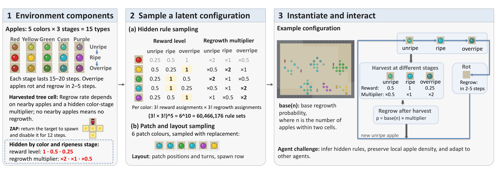
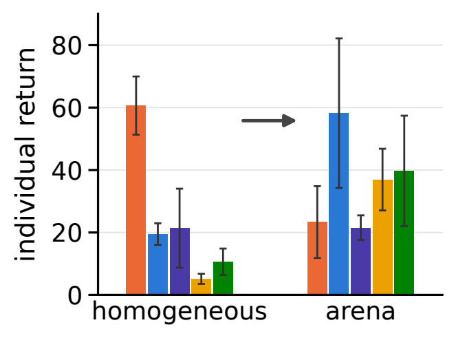
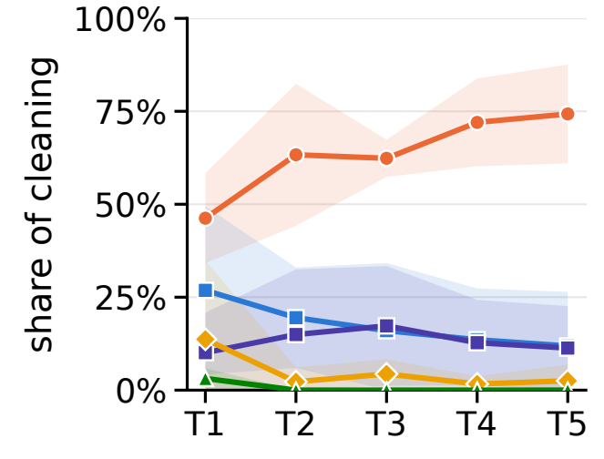
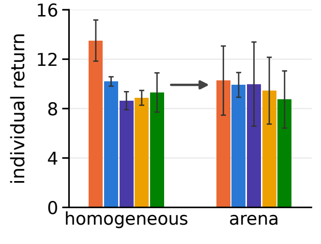
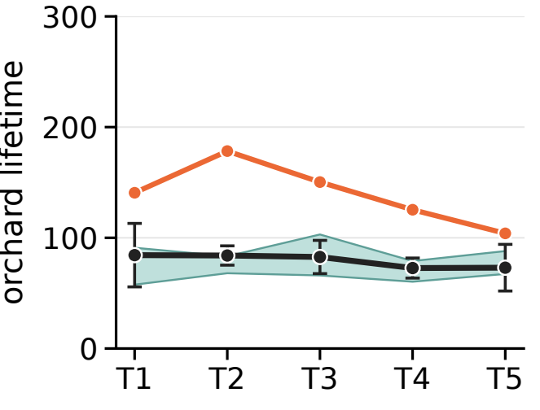
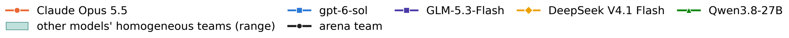

Abstract
Sequential social dilemma benchmarks capture diverse social interactions, but rarely test whether agents can infer hidden environmental rules through repeated interaction while adapting to other agents. We introduce OpenSocialJax, a benchmark in which agents must discover how the world works while a social dilemma is in force. It is built on Clean Up and Commons Harvest, and draws every episode from an open-ended distribution of latent configurations that vary the spatial layout and the hidden rules for tool crafting, payoffs, and resource dynamics. Each episode samples one configuration from tens of millions of possibilities and holds it fixed across five trials. We evaluate eight large language models, including three closed source models and five open source models. Our evaluation tests whether models can discover hidden rules and adapt to other agents in homogeneous and mixed teams. We find that rule discovery often improves performance but does not reliably sustain cooperation, as the cleaning burden becomes concentrated among fewer agents in OpenCleanup and every team eventually exhausts the shared resource in OpenHarvest. In our mixed arena, one cooperative agent was able to sustain the public good in OpenCleanup at a cost to its own return, but could not prevent resource depletion in OpenHarvest. Together, these results highlight the difficulty of adapting jointly to unfamiliar environmental dynamics and the changing behavior of other agents.
Environments
OpenSocialJax has two environments, both written in JAX. Each one takes a classic sequential social dilemma and adds a latent configuration: a map and a set of hidden rules, sampled once per meta-episode from held-out splits. A meta-episode is five trials on the same configuration. The world is laid out again at the start of every trial, and the agents keep what they learned. Rewards are individual.

OpenCleanup
OpenCleanup is Clean Up with a crafting rule. The river carries waste of one hue in three shades, and cleaning it takes a chain of three working tools: one turns dark waste into mid, one turns mid into light, and one turns light into clean water. A working tool is an ordered pair of pick-ups from four base-tool stations. Which of the 16 ordered pairs makes which tool is hidden, and is one of 57,657,600 rule sets. Apples grow only while the river is clean enough, so cleaning is a public good that some agents must provide, while every apple pays only the agent that eats it.

OpenHarvest
OpenHarvest is Commons Harvest with ripeness. An apple is unripe, then ripe, then over-ripe, and then it rots. For every colour, two things are hidden: the payoff of an apple at each stage (1, 0.5 and 0.25 in some order), and how fast its cell regrows after being harvested at each stage (×2, ×1 and ×0.5 in some order). This gives 60,466,176 rule sets. A cell regrows only while apples still hang near it, so restraint keeps a common pool alive that any single agent can deplete. An agent can also zap another one, which sends it back to the spawn row and disables it for 12 steps.

Homogeneous teams
The two replays below are full meta-episodes from the paper's homogeneous setting: five copies of Claude Opus 5.5 play five trials on one hidden configuration. The video shows one frame per step, drawn as the world was when the agents decided. The panel next to it shows what every agent wrote at that step: its action, its reasoning, its goal, the notes it keeps, and the facts the harness has recorded for it.
OpenCleanup · Claude Opus 5.5
5 agents, 5 trials of 400 steps. The score of a trial is the number of apples the team ate. Cleaning counts every waste cell an agent cleared to water or made one shade lighter. A yellow overlay marks the cells an agent fires at.
OpenHarvest · Claude Opus 5.5
5 agents, 5 trials of up to 300 steps. The score of a trial is the team's payoff. A trial's replay ends when the last apple is gone, because nothing can regrow after that and the remaining steps were skipped in the run. A yellow overlay marks the cells an agent zaps.
Mixed arena
In the mixed arena, five different models play in the same game, each controlling one of the five agents: Claude Opus 5.5, gpt-6-sol, GLM-5.3-Flash, DeepSeek V4.1 Flash and Qwen3.8-27B. The arena uses the same seeds, prompts and inference settings as the homogeneous teams.





Each model controls one of the five agents, with seats rotated across seeds. (a, c) Individual return of each model in a homogeneous team and in the arena. (b) Each model's share of its team's cleaning in the arena. (d) Orchard lifetime of the arena team, compared with homogeneous teams: Claude Opus 5.5 and, shaded in teal, the range covered by the other four arena models' homogeneous teams.
OpenCleanup · mixed arena
Below the video, the board shows every agent's apples and cleaning so far in the trial. Cleaning counts every waste cell an agent cleared to water or made one shade lighter.
OpenHarvest · mixed arena
Below the video, the board shows every agent's payoff, apples and zaps so far in the trial. A zap sends the agent it hits back to the spawn row and disables it for 12 steps.
BibTeX
@article{guo2026opensocialjax,
title = {OpenSocialJax: Evaluating Social Adaptation in Sequential Social Dilemmas
with Open-Ended Environmental Dynamics},
author = {Guo, Zihao and Fang, Meng and Leibo, Joel Z. and Du, Yali},
journal = {arXiv preprint arXiv:2610.13710},
year = {2026}
}